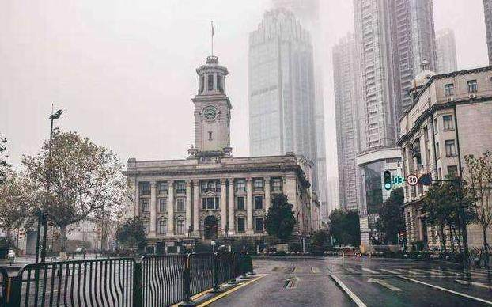
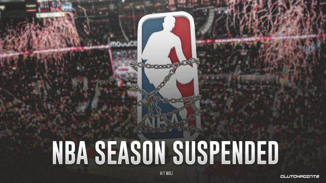

NBA：各球队需做好空场比赛的准备
原文链接 备份链接 图片来源：视觉中国 “ NBA已经提醒各球队需要准备应急预案——仅在必要人员在场的情况下进行比赛。 ” 虎扑篮球3月7日消息，据NBA记者Shams Charania报道，消息人士透露，联盟已经向各支球队发放了备忘录， …
体坛周报特约记者吴家驹华盛顿报道
2月3日，在通道找比尔为中国录祝福的自己，完全不会想到：37天后的NBA，会因为疫情而停摆。也想不到自己短暂的生涯，可能会以这种方式结束。
全球第一例感染者至今无从考证，进入2020年以来，新冠病毒疫情在中国武汉爆发，接着成为了全国的灾难，又接着成为了全球的浩劫。
这场全球的浩劫，NBA同样不能幸免：从不知情者，到祝福者，到受害者，再到影响者。
1月21日，美国华盛顿州出现第一例新冠感染者，当天的纽约时报这样写道：“一种神秘的呼吸道感染病，已经在亚洲至少杀死了6人，导致上百人感染。”然而这则新闻却没有在美国引起什么波澜，第二天的头版也是大选这样“更为重要的事件”。

1月23日，武汉封城，中国的疫情形势极为严峻。纽约时报也报道了这则消息，不过这天的头版，依然被大选牢牢占据。
1月24日，雷霆球员亚当斯，在推特上致敬战斗在一线的医务人员，成为了第一个祝福中国的NBA球员。NBA和这个神秘病毒的距离，正在不断接近。
2月3日，中国的疫情日渐加剧，奇才主场对阵勇士。笔者在通道找到比尔，请比尔录了一段对中国的祝福。比尔很友好地录了视频，不过他自己也表示：“确实对这个病毒还不太了解。”
2月16日，芝加哥全明星正赛当晚，比赛中球场大屏幕打出了“武汉加油”的中文。赛前新闻发布会上，不是中国记者，而是西方记者提问NBA总裁肖华：“中国的疫情是否会影响NBA回到中国的进程？”肖华表示：“我还不知道下一步的流程。对于疫情，合适的人会做出决定，但这已经超出了我们的职能范围。”

2月29日，事态加剧，美国西雅图出现第一例新冠肺炎死亡的案例。美国总统特朗普紧急召开新闻发布会，介绍疫情进展，同时告诉大家不要惊慌。紧张情绪开始蔓延，讨论病毒的人也越来越多。但即便如此，街上却依然看不到有人戴口罩，而这原因是多方面的。一方面，在官方宣传下，美国大多数人信奉着“口罩无用论”。另一方面，口罩在美国也是着实难买，实体药店的口罩早已售罄，销售口罩的网站也大多早已卖光。而在拍卖网站eBay上，则有不少口罩被溢价出售。
3月2日，NBA发布第一份防疫指南，主要包括：建议球员和球迷互动时，以碰拳代替击掌，并建议球员停止给观众签名，因为会接触到观众的笔、球衣和篮球等物品。
3月6日，华盛顿特区隔壁的马里兰州出现确诊患者，而这天奇才对阵老鹰的比赛照常进行，没有人戴口罩赛前原本笔者想提问关于防疫指南的问题，但奇才资深记者Fred Katz却首先提出了这一问题。而在笔者和教练提到中国已停止所有体育比赛的时候，教练表示：“我也不知道未来如何发展，不过NBA会做出明智的决定。”而在这场比赛赛前，也依然有不忍拒绝球迷为他们签名的球员，更有球员还走上了看台和球迷合影。同样是赛后不久，NBA忽然发布声明：“各队做好比赛空场进行（即没有观众和媒体）的准备。”
3月7日，NBA再发声明：“可能在将来暂时不对媒体开放更衣室，但会为媒体提供其他的采访渠道。”
3月9日，NBA开始了第一项改变措施：“更衣室不再对媒体开放，要求球队安排媒体在更衣室外进行采访，并要保证球员与媒体之间相隔6到8英尺。”

3月10日，全美确诊人数超过1000人，死亡超过30人，华盛顿特区也已有四例确诊。奇才主场对阵尼克斯，这天奇才队采用了新的采访形式：发布会。而谈及这一新形式，有球员表示有点酷，有球员表示并不陌生，尼克斯教练也表示挺有意思。这天的地铁和球馆外，也终于出现了戴口罩的球迷，虽然人数极少。
确诊人数已超千人，但球迷看球，球员打球的日常却还在继续。然而3月11日晚上，平静的日常彻底被打破：
爵士和雷霆比赛赛前，爵士球员鲁迪·戈贝尔检测呈阳性，确诊感染新冠病毒。第一例确诊NBA球员出现！NBA随后马上宣布停摆！全美震动了，这则消息马上成为了推特头条，随后其他体育赛事纷纷宣布停摆。
3月12日，戈贝尔的队友多诺万·米切尔确诊感染新冠病毒。接下来，NCAA（大学篮球）暂停，MLB（棒球）暂停，NHL（冰球）暂停，MLS（足球）暂停。也在这一天，迪士尼公园宣布闭园，百老汇宣布关闭。而众多NBA球员们也纷纷进行检测，并戴上了口罩。
美国民众也似乎有些恐慌起来了：不少地方的超市货架被买空，街上的人明显变少。同时随着时间的推移，越来越多的学校宣布停止线下授课。
3月13日，特朗普宣布：美国进入国家紧急状态。
一个月内，NBA经历了到祝福者，到经历者，再到影响者的角色转变。不知是否是错觉，自NBA宣布停摆，其他体育赛事、文娱活动陆续暂停后，美国民众对疫情的重视程度好像忽然上了一个档次。也许体育比赛已成为了NBA民众生活重要的一部分吧，当体育比赛还在继续，预示着安好的日常还在继续。而当体育比赛被暂停，日常被打破，人们终于意识到事情已经非常严峻。

在NBA宣布可能会空场后，自己首先感觉到了一丝遗憾，毕竟NBA恢复日期待定。而假如美国疫情控制不利，NBA恢复时间超出预期，对于原定于赛季正常结束后离开的自己来说，自己本赛季的工作可能已提前结束，毕竟就算NBA恢复，到时自己能否有时间去比赛也是未知数。而这赛季是自己在前线报道NBA的第一个赛季，同时也是最后一个赛季，自己短暂的NBA记者生涯也有可能已提前结束。
同时也感觉到了一丝心安，毕竟这种时期，多去一次比赛，就多一份风险。而在戈贝尔确诊后，又忽然有了一丝恐惧，想起奇才曾在上个月2月28日客场挑战爵士，开始猜测自己有无可能被感染。最终几天过去，自己并无症状，宅在家减少出门，准备感觉不对就去检测。
NBA会停多久，以何种方式恢复，无人知晓。美国还会有多少感染者，世界还会有多少人因此遭受折磨，无人知晓。一场浩劫，无人可以置之事外。所有人都要团结起来，做好自己，保护好自己，直到胜利的那一天。
（本文中时间均为美东时间）
原文链接 备份链接 图片来源：视觉中国 “ NBA已经提醒各球队需要准备应急预案——仅在必要人员在场的情况下进行比赛。 ” 虎扑篮球3月7日消息，据NBA记者Shams Charania报道，消息人士透露，联盟已经向各支球队发放了备忘录， …
原文链接 备份链接 图片来源：图虫 特约作者：钱伯彦 “ 德国所有医保机构年均380亿欧元的支出在欧洲一枝独秀，远超法国的230亿欧元和英国的140亿欧元。 ” 新冠病毒加速肆虐老迈的欧洲大陆。 就公开的确诊数而言，意大利一度超越韩国成海 …
原文链接 备份链接 伊朗卫生部7日公布，截至当地时间7日上午，伊朗新增新冠肺炎确诊病例1076例，累计病例数升至5823例，其中死亡145例，治愈1669例。 地处欧亚大陆“十字路口”的伊朗，向外扩散的风险日渐增加。 实习记者｜ 戴敏洁 …
原文链接 备份链接 现在校园里还没有人戴口罩，但国内的亲人总是打电话说美国疫情严重，出门一定要戴口罩，这让他非常为难。 文｜李 莹 今年春节，我到美国旅游，结果因为新冠肺炎疫情，回程航班被取消了……一言难尽。这是我滞留美国的第42天，西 …
原文链接 备份链接 随着新冠肺炎疫情在全球范围内扩散，“口罩荒”现象明显增多，不少国家开始禁止口罩出口。 全球多地口罩告急 韩国买口罩实行单双号 随着新冠肺炎疫情加剧，韩国市场上“口罩荒”日益严重。韩国将实施口罩限购措施：按照出生年份的奇 …